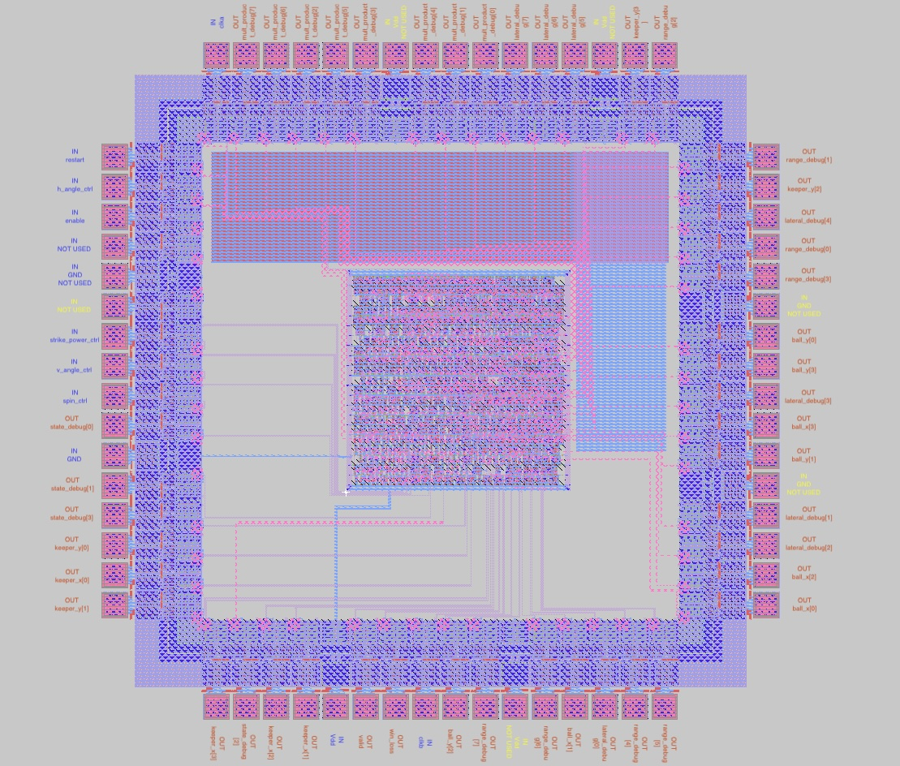
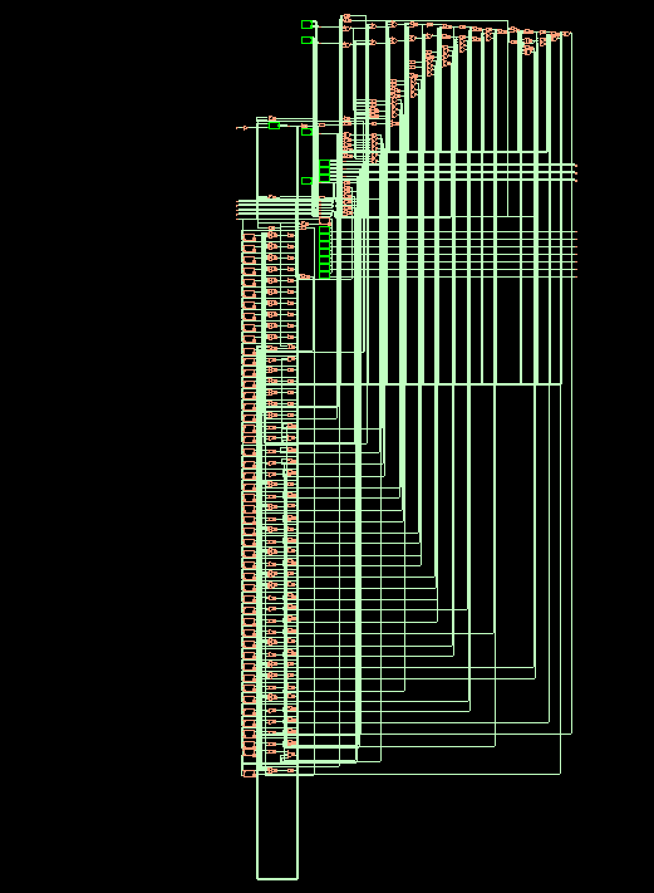
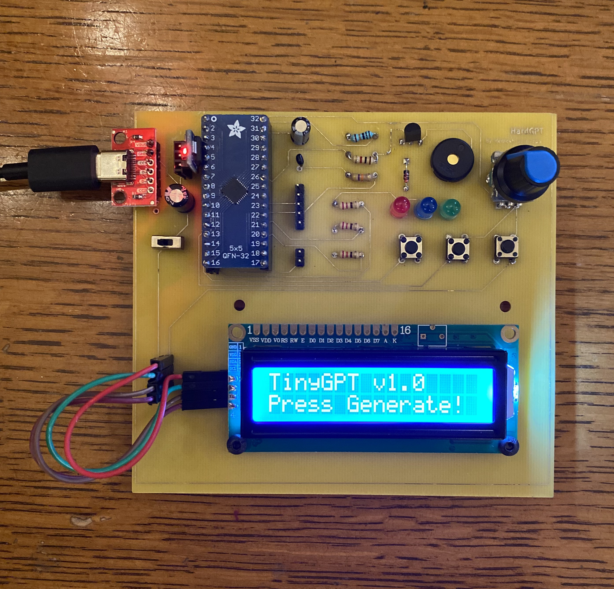
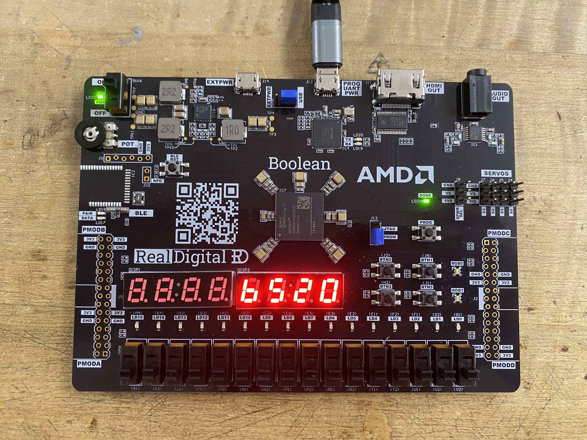

Portfolio
Custom digital IC designs built from the ground up using industry standard EDA toolchains and software.
Designed and implemented a fully operational FIFA-inspired penalty shootout game ASIC containing 7,158 transistors and 859 cells across 19,375 square microns of core area. Wrote the FSM controller, datapath, and top modules in Verilog, integrating LFSR-based pseudo-random number generation for unpredictable shot placement alongside register-level multiplication. Functional correctness was verified in QuestaSim using a custom testbench, followed by synthesis in Synopsys Design Compiler targeting a 0.5 micron process. Executed place and route in Cadence Innovus, routing the 54-pin core into a 64-pin padframe with Magic VLSI, and validated operation through the padframe using IRSIM. The final design achieved 4.62 ns of slack while consuming 10.93 mW of power, with full system testing modeled via an FPGA board and LED matrix.

Designed and implemented a pipelined CORDIC algorithm in C++ targeting a 45 nm ASIC using Siemens Catapult HLS. Performed SkyWater 130 nm synthesis in Cadence Genus, place and route in Cadence Innovus, and functional verification in Cadence Xcelium using a Verilog testbench. Used Cadence Quantus for parasitic extraction and Tempus for post-layout timing analysis, achieving 93 ps of slack under an 800 MHz timing constraint. Final core contained approximately 2,584 transistors, occupied 3,548 square micron of area, and consumed 2.1 mW of power.

Developed bare-metal C firmware to execute a 3-layer AI transformer on-chip without an FPU by fitting the model into 32 KB SRAM using 8-bit (int8) quantization and replacing slow mathematical operations with integer bit-hacks. Designed a custom 2-layer PCB in KiCad incorporating a dollar ARM Cortex-M0+ microcontroller, AMS1117 voltage regulator, I²C LCD display, LEDs, and tactile button controls. Successfully got the board fabricated and validated real-time character generation through hardware testing.

Used Verilog to create a single cycle 16-bit processor that supports and performs complex arithmetic and logic operations. Simulated the build with AMD Vivado and Xilinx Spartan-7 FPGA board to verify its functionality.
